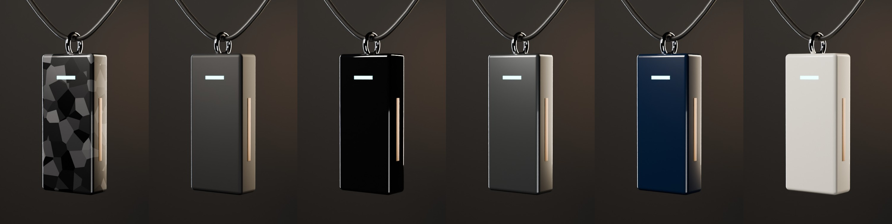
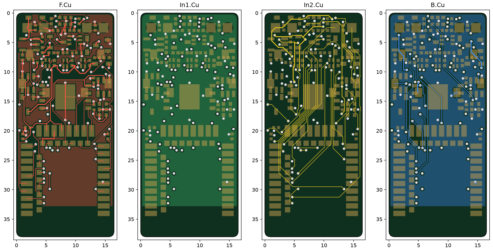

Prepared by the notªpad team for the PCBWay sponsorship programme for non-profit engineering projects.
1Background
Wearable AI voice recorders are a new kind of device: they record your day and give back transcripts, summaries and notes. Almost all of them, however, tie the user to a cloud service, a subscription and a single AI chosen by the maker.
notªpad is an open, non-commercial alternative. It is a small resin monolith worn around the neck that:
records audio all day with two microphones;
syncs with the phone over Bluetooth Low Energy;
leaves transcription and note organisation to an AI chosen by the user, through an open MCP (Model Context Protocol) server;
keeps the data under the user's control: transcription can run entirely on the user's own device, with no cloud.
The project is built by a small group of friends in their spare time. Everything is public: hardware under CERN-OHL-S-2.0, software and documentation under MIT.
41 × 17.5 × 9mm, resin monolith
16.5 × 38mm, 4-layer 1.0 mm PCB, top side only
~20 hestimated battery life on a 110 mAh cell
256 MBNAND, 11–12 h of continuous stereo audio
2The object

Renders of the six finishes under evaluation: forged carbon, soft-touch matt black, gloss black, metallic anthracite, midnight blue, ivory.
A resin monolith of about 41 × 17.5 × 9 mm, with a steel ring embedded at the top for the lanyard.
"Squeeze" gesture: two capacitive electrodes, one on each side. A command counts only when both are touched, so contact with the chest never triggers anything by mistake.
3 RGB LEDs behind a 10 mm front slit, and a vibration motor for notifications.
2 PDM microphones: one on the front and one on top (with a small channel to the top face), for stereo recording and, later on, for telling speakers apart.
4 exposed gold contacts on the back: 5 V and GND for charging, SWDIO and SWCLK for the firmware. The pogo springs sit in the dock, not in the monolith. Later the firmware will also update over Bluetooth (OTA).
Enclosure: for v0.1, two SLA-printed half-shells filled with low-exotherm epoxy. For the final version: SLA master → silicone mould → solid pigmented cast.
3Electronic design (v0.1)
Board
16.5 × 38 mm, 4 layers, 1.0 mm thick, components on the top side only.
Stack-up: F.Cu signals · In1 continuous ground plane · In2 signals and power · B.Cu signals and ground. Antenna keep-out on every layer.
Rules: 0.10 / 0.10 mm track and gap, 0.25 / 0.45 mm vias, 0.25 mm copper-to-edge clearance.
Three zones: A (contacts, top microphone, charger, power latch) · B (LEDs, NAND memory, front microphone, regulator, touch sensors) · C (radio module, antenna flush with the board edge, no copper or battery underneath).
Under the board: a Ø 8 × 2 mm motor and a 381620 LiPo cell with protection circuit (about 110 mAh).

The four copper layers of the v0.1 board as routed (F.Cu, In1.Cu ground plane, In2.Cu, B.Cu; axes in mm, 114 vias). The empty band at the bottom is the antenna keep-out.
Main components
Function
Part
MCU + Bluetooth LE
Ebyte E73-2G4M08S1C (nRF52840)
Audio storage
W25N02KV, 256 MB SPI NAND (footprint-compatible with the 512 MB part)
Microphones
2 × MSM261DGT003, PDM, top-port
Charging
MCP73832 (open-drain STAT), 50 mA
Regulator
XC6206 3.3 V
Touch
2 × TTP223
LEDs
3 × common-anode RGB
Latch and reset
AO3401A, 2N7002DW, 1N4148WS
Power management
The firmware warns at 3.65 V and shuts down at 3.50 V by releasing a HOLD signal: a P-MOSFET latch cuts everything off and the residual draw falls below ~5 µA, protecting the cell.
When the monolith is placed on its dock, the 5 V on the contacts turns the latch back on through a diode and sends a reset pulse to the nRF52840: "reset by charging", with no buttons.
The watchdog is always on. The cell's protection circuit stays as the last line of defence.
Design method
The whole KiCad 10 project is generated by scripts from a single definition of parts, nets and placement: schematic, board, rules, automatic routing and manufacturing files (Gerber, bill of materials, placement). A set of 69 automated checks verifies design rules, pinout against datasheets, symbols against footprints, circuit calculations, mechanics and consistency across documents.
Board status: ERC 0, DRC 0 violations, 0 unconnected nets, schematic and board in sync.
Estimates (to be confirmed on real hardware)
Average draw ~4.6 mA while recording (sum of datasheet figures) → about 20 hours of battery on the 110 mAh cell, with little margin until the DC-DC converter is confirmed.
Stereo LC3 audio at 2 × 24 kbit/s → about 216 MB per 10 hours: the 256 MB NAND holds 11–12 hours of continuous recording. Memory, not battery, is therefore the limit; recording only when there is sound and automatic syncing during the day stretch it.
4Progress
Done
Concept, renders and choice of finishes for the monolith.
v0.1 board complete and verified, with manufacturing files exported.
Software test bench: while waiting for the final board, we moved the whole chain onto a Seeed XIAO nRF52840 Sense development board with a battery (same nRF52840 chip, PDM microphone, flash memory).
Test firmware: records at 16 kHz, compresses to ADPCM, writes into a ring buffer in memory and downloads the data over BLE with acknowledgement and CRC checks. It syncs on its own when memory is 80% full. Touch gestures start and stop recording. It only records when there is sound: an adaptive threshold over the background noise, plus half a second of pre-roll kept in RAM.
Test app (progressive web app, Web Bluetooth): download, local storage and Whisper transcription running entirely on the user's device (WebGPU/WASM, no cloud), speaker separation and voice commands.
The board → app chain has been tested on real hardware.
In progress
Field testing of firmware and app: transcription quality, sound threshold, power draw.
Revising the board based on what the tests have shown (see §5).
Next steps
A native Android app (today the app is a local web app).
MCP server architecture: transcription, speaker recognition and commands moved into an open service, to which users connect the AI they prefer.
Final firmware for the board (Zephyr / nRF Connect SDK, LC3 codec, OTA updates).
9 mm SLA half-shells and the first complete assembly.
5Improvements found during testing
Bench testing has already changed some choices, and we expect more to come in the next few weeks. That is why we prefer to freeze the board only after this phase.
Standby with acoustic wake-up
Recording only when there is sound works, but with the current PDM microphones the nRF52840 has to keep them powered all the time to "listen", which costs a few mA. We are evaluating a microphone with built-in acoustic activity detection, which wakes the processor with an interrupt and draws a few tens of µA (for example the TDK T5838). The alternative is an analogue microphone feeding the nRF52840's internal low-power comparator. The goal is a much longer battery life without losing the start of sentences.
Finding the device
We are evaluating compatibility with smartphone finder networks. The nRF52840 and Nordic's stack already support Google Find Hub, which is our target. Apple Find My requires Apple's certification programme and is still to be evaluated. Any solution will follow the protections against unwanted tracking (the DULT specification): a device that records must be more respectful of privacy than ever.
6Manufacturing needs
First batch: 5 assembled boards.
4-layer PCB, 1.0 mm, 16.5 × 38 mm, top-side assembly only.
Fine-pitch parts: radio module, 0402 passives, PDM microphones, 1010 LEDs.
The 5 units are for: 2 prototypes for firmware development, 1 for power and battery-life tests, 2 for casting and enclosure tests.
Possible enclosure support: SLA (resin) printed half-shells for v0.1 and the master for the silicone mould.
Timing: the final files (Gerber, bill of materials, placement) will be ready in a few weeks, after the revision in §5. Before freezing them we will adapt the bill of materials to the parts available from the sponsor, for 100% compatibility.
7What we offer the sponsor
Logo and "Sponsored by" credit on the README, on the project page and on the board's silkscreen.
Publication of the project on the sponsor's platform, with the build log, photos of the assembled boards and the manufacturing files.
Credit in every post and video about the project.
A single manufacturing sponsor: no other manufacturer named as a supplier.
Openness to any specific requests from the sponsor (content, formats, visibility, project details): we will look at them together and, where feasible, we will be glad to implement them.